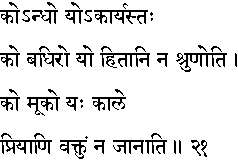
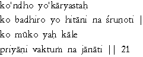

|

|
Verse 21 - Meaning:
Q: Who is a blind man ? (ko andho)
A: That one who delights in doing things (knowingly) that should not be done.
Q: Who is a deaf man ? (ko badhiro)
A: That one who does not listen (na srunoti) to advice given for his good.(hitani)
Q: Who is a stupid man ? (ko muko)
A: He who does not know to speak sweetly (priyani vaktum)when needed.
|